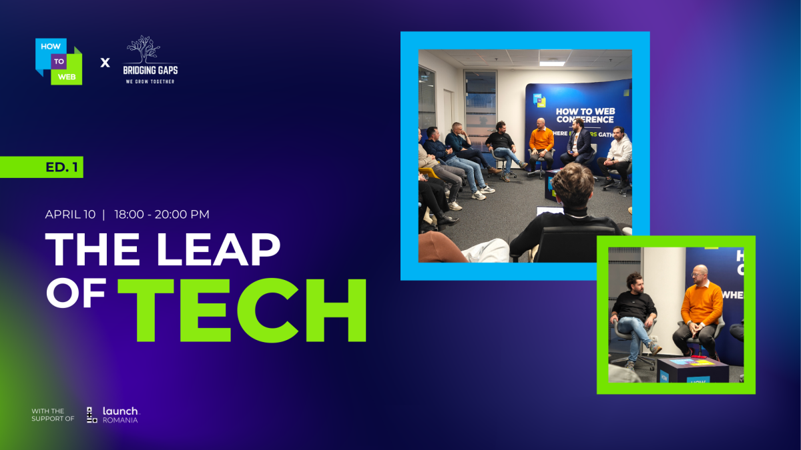
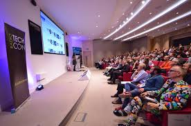

History of TechCon
Since its inception in 2003, TechCon has evolved from a small developer meetup into a globally recognized technology conference. Initially focused on open-source and grassroots innovation, it quickly expanded to cover emerging trends like AI, cybersecurity, and cloud computing.
By the 2010s, TechCon had established itself as a global platform, attracting leading voices from industry, academia, and startups. Its agile pivot to virtual formats during the 2020 pandemic further widened its international reach.
Now in 2024, TechCon continues to lead the conversation on technology’s future, offering a hybrid experience that blends cutting-edge innovation with global accessibility.
